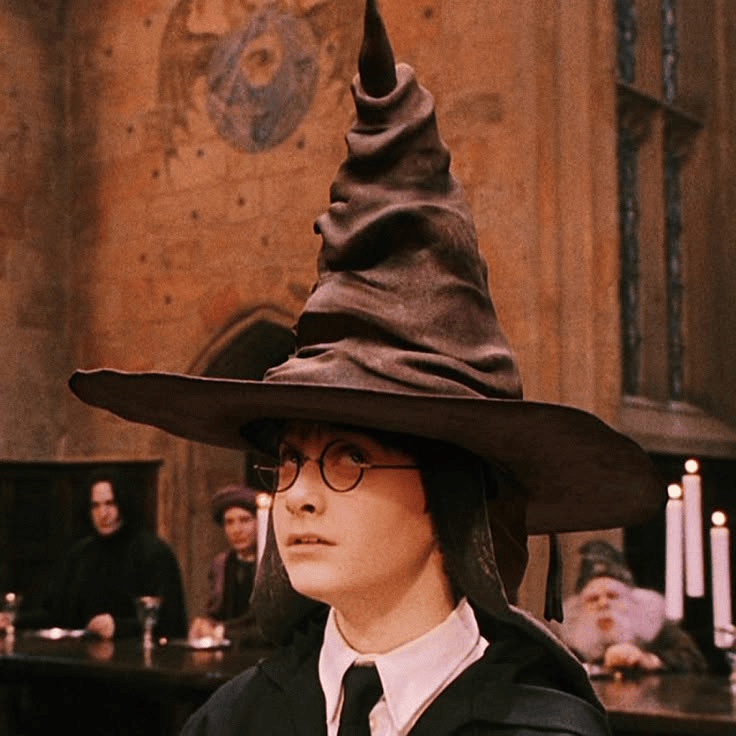

Фритрек и нулевой спринт: Подготовка к работе

</новые возможности>
Это было самое начало пути. На этом этапе важно было проникнуться основами и настроиться на учёбу. И, возможно, подумать, как новые знания могут повлиять на ваше будущее.
Наступает понимание, что перед тобой открывается абсолютно новый, незнакомый, но поистине увлекательный мир разработки, который в будущем позволит открыть новые возможности для собственной реализации.